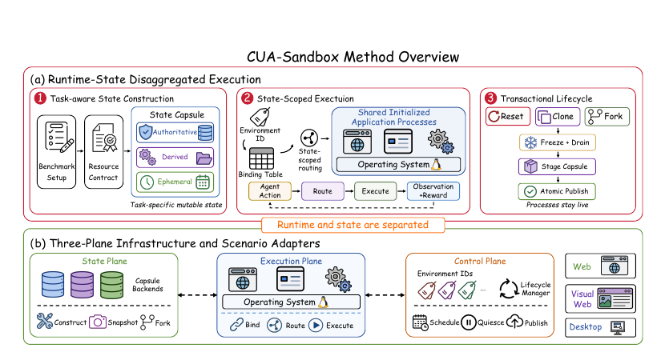

Capsules hold what changes
Databases, files, profiles, caches, and session resources travel together as one versioned environment state.
Independent trajectories.
One living runtime.
A living application stack for many computer-use agent rollouts. Every trajectory gets its own reality, without rebuilding the world around it.

A trajectory needs private mutable state. It does not need a private copy of every initialized process around that state.
Databases, files, profiles, caches, and session resources travel together as one versioned environment state.
Environment IDs and binding tables direct foreground requests, callbacks, and background work to the right capsule.
Reset, clone, and fork quiesce work, stage a successor, and publish a complete generation atomically.
Click through the execution loop to see how the same live application stack serves independent rollouts.
Authoritative · derived · ephemeral state
Browser, services, and operating system stay live
Schedule · quiesce · stage · publish
Turn a task setup and resource contract into a capsule that can be copied, reset, or forked independently.
Scenario adapters preserve the interfaces agents already use across WebArena, VisualWebArena, and OSWorld. The substrate changes underneath: bindings resolve each action to a private generation while initialized software is reused.

The paper separates mutable resources by how they must survive a reset. One manifest keeps the pieces versioned together.
Databases, user-created files, sessions, and any evaluator-visible write. Stored as a private delta over immutable base data.
Caches, indexes, and namespaces that affect latency or lookup. Reconstructed when doing so costs less than copying them.
IPC endpoints, displays, temporary handles, and other session resources. Recreated when a capsule becomes active.
For two different environments, reachable writable state must never overlap. Immutable base data may be shared; writes resolve to each environment’s branch.
Every contracted resource key gets a binding to immutable base data, a private branch, a namespace, and an interface endpoint. A generation lease pins that table for the complete causal operation.
Lifecycle operations are coordinated with in-flight work. The old generation stays published until its successor is ready.
Stop admitting new work for one environment and let callbacks finish under its generation lease.
Build the clean database branch, file overlay, browser profile, and derived namespaces as one candidate.
Publish only when every contracted resource is ready. Stale requests are rejected before execution resumes.
The shared processes remain initialized while this rollout sees a fresh, evaluator-consistent state.
The same interaction and evaluation interfaces were paired across web, visual-web, and desktop workloads.
Shopping, CMS, and GitLab domains with state-changing website evaluations.
Visually grounded browser interaction across Classifieds, Reddit, and Shopping.
Open-ended desktop workflows spanning OS, Office, Daily, Professional, and Workflow.

The ablation separates the two effects. CoW reduces duplicated writable state; sharing initialized web and database processes removes the replicated runtime itself.
| Configuration | Runtime RAM | Writable storage |
|---|---|---|
| Official Docker · 8 runtimes | 15,560 MiB | 52.99 GiB |
| CoW · independent runtimes | 13,882 MiB | 24.65 GiB |
| CoW + shared runtime | 3,261 MiB | 23.19 GiB |
The sharing boundary follows the task: requests for web apps, sessions for desktop apps, and a conservative private backend when a resource cannot be safely rebound.
Rollout A adds a product while rollout B keeps its own cart. Database, session, and cache bindings carry A’s environment context through the request.
Each browser profile and screenshot stream stays attached to its own capsule while the visual application stack remains warm and shared.
Rollout A saves an edit to its file overlay. Rollout B keeps seeing its own document, display, profile, and message-bus endpoints.
Across web, visual-web, and desktop workloads, runtime reuse keeps real execution while shrinking the cost of each additional environment.
Representative concurrency scaling · lower is better except throughput
| Benchmark | Throughput | RAM / env. | Storage / env. |
|---|
Measurements from the attached paper. Values compare CUA-Sandbox with Docker under matched concurrency; throughput is environments per second, memory and storage are per environment.
Read the full paper for the resource contracts, lifecycle protocol, benchmarks, and isolation invariants behind CUA-Sandbox.
@article{yan2026cuasandbox, title={CUA-Sandbox: Efficient Environments for Computer-Use Agent Reinforcement Learning}, author={Yan, Xin and Jiao, Zhengbo and Liu, Jiaqi and others}, year={2026}}